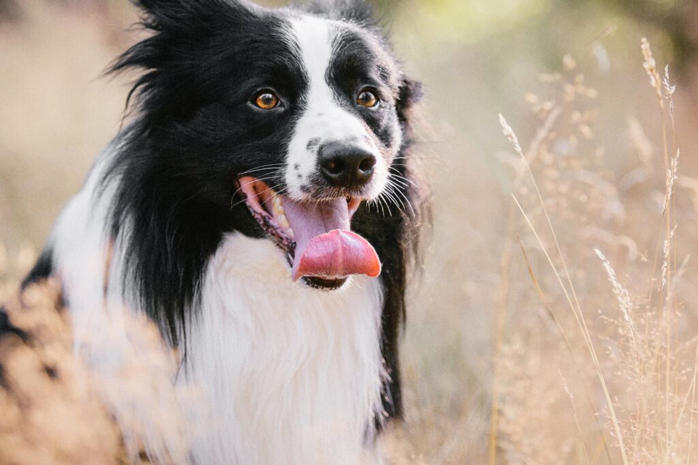
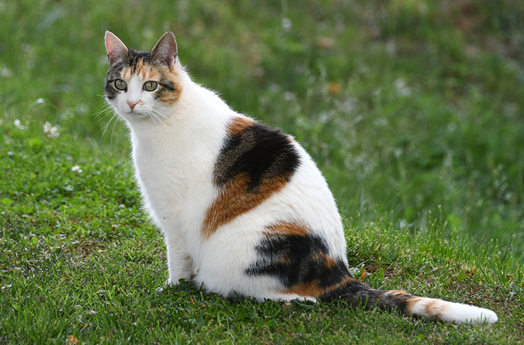

La red solidaria más grande de Yopal dedicada a reunir mascotas perdidas con sus familias. Porque cada huella cuenta y cada reencuentro es una victoria.

¡Final Feliz!
Max regresó a casa ayer
Reencuentros
Usuarios en Yopal
Amor
Reportes en las comunas de Yopal
Ellos ya regresaron gracias a la comunidad de Yopal

"No podíamos creerlo cuando recibimos la llamada. Gracias a Huellitas a casa, Bruno regresó a casa en menos de 24 horas después de perderse en el centro."

"Pensé que nunca volvería a ver a mi gatita. Alguien la encontró cerca al aeropuerto y publicó su foto aquí. ¡Eternamente agradecida!"